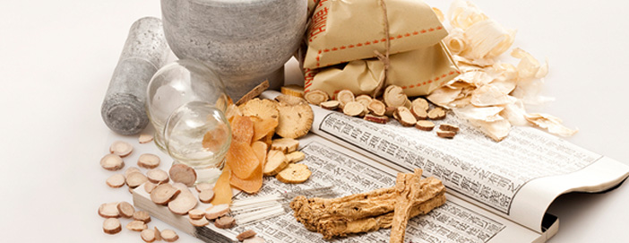
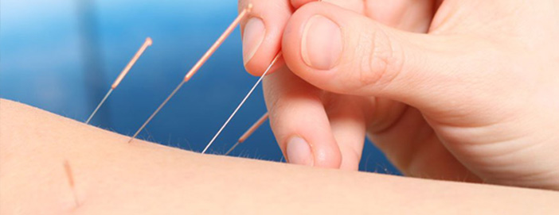

饮食调理
“饮食保健”是专业性国家级医学学术期刊、是中国医促会会刊。服务于医学创新研究，以医疗事业改革和广大医疗工作者探究学习，增强医德，提升医术为主旨，努力体现专业性，学术性，权威性，贴近实际追求实用。本刊长期面向全国征集医学学术论文,在本刊发表的论文可获得国家级继续教育学分以医疗事业改革和广大医疗工作者探究学习，增强医德，提升医术为主旨努力体现专业性学术性权威性，贴近实际，追求实用。
环境优化
“饮食保健”是专业性国家级医学学术期刊、是中国医促会会刊。服务于医学创新研究，以医疗事业改革和广大医疗工作者探究学习，增强医德，提升医术为主旨，努力体现专业性，学术性，权威性，贴近实际追求实用。本刊长期面向全国征集医学学术论文,在本刊发表的论文可获得国家级继续教育学分以医疗事业改革和广大医疗工作者探究学习，增强医德，提升医术为主旨努力体现专业性学术性权威性，贴近实际，追求实用。
传统疗法和理疗
“饮食保健”是专业性国家级医学学术期刊、是中国医促会会刊。服务于医学创新研究，以医疗事业改革和广大医疗工作者探究学习，增强医德，提升医术为主旨，努力体现专业性，学术性，权威性，贴近实际追求实用。本刊长期面向全国征集医学学术论文,在本刊发表的论文可获得国家级继续教育学分以医疗事业改革和广大医疗工作者探究学习，增强医德，提升医术为主旨努力体现专业性学术性权威性，贴近实际，追求实用。
运动配合
“饮食保健”是专业性国家级医学学术期刊、是中国医促会会刊。服务于医学创新研究，以医疗事业改革和广大医疗工作者探究学习，增强医德，提升医术为主旨，努力体现专业性，学术性，权威性，贴近实际追求实用。本刊长期面向全国征集医学学术论文,在本刊发表的论文可获得国家级继续教育学分以医疗事业改革和广大医疗工作者探究学习，增强医德，提升医术为主旨努力体现专业性学术性权威性，贴近实际，追求实用。
心理调节
“饮食保健”是专业性国家级医学学术期刊、是中国医促会会刊。服务于医学创新研究，以医疗事业改革和广大医疗工作者探究学习，增强医德，提升医术为主旨，努力体现专业性，学术性，权威性，贴近实际追求实用。本刊长期面向全国征集医学学术论文,在本刊发表的论文可获得国家级继续教育学分以医疗事业改革和广大医疗工作者探究学习，增强医德，提升医术为主旨努力体现专业性学术性权威性，贴近实际，追求实用。